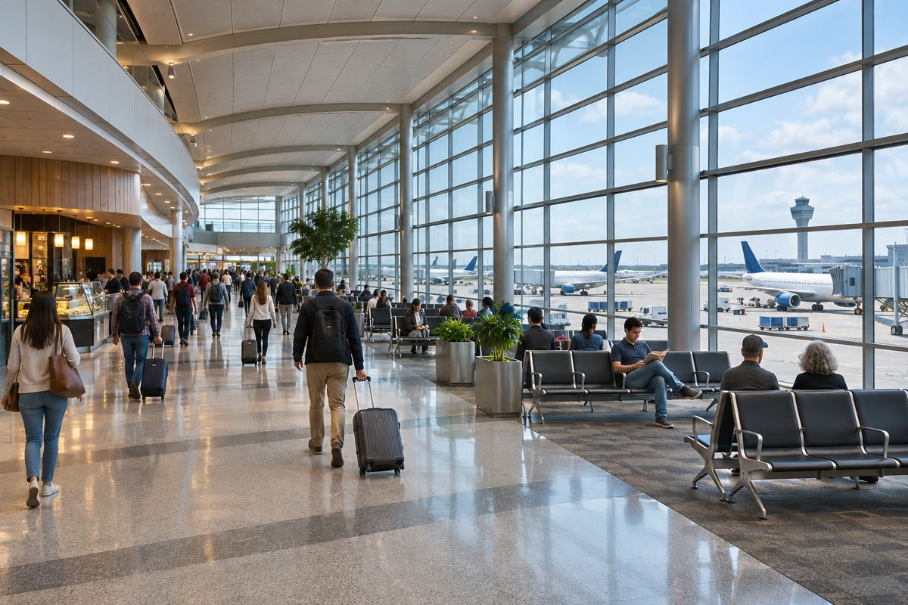

항공 / EXPLAINED
아메리칸항공, 추수감사절 기간 약 8만5000편 계획…11월 29일 7021편
11월 19일부터 12월 1일까지 지역 제휴사를 포함한 운항 계획이 전년보다 4% 늘었다.

아메리칸항공이 11월 19일부터 12월 1일까지 추수감사절 여행 기간에 지역 제휴사를 포함해 약 8만5000편을 운항할 계획이라고 밝혔다. 11월 9일 공개된 자료에서 회사는 2025년 같은 명절 운항 규모보다 4% 늘어난 수치라고 설명했다. 800만 명 이상을 수송한다는 예상도 내놓았다. 발표 시점의 계획과 예상치이므로 실제 출발 편수와 탑승 인원은 기간이 지난 뒤에 확인할 수 있다.
아메리칸항공은 댈러스포트워스 등 미국의 주요 공항을 거점으로 장거리편과 지역편을 연결한다. 회사가 이번에 집계한 약 8만5000편에는 지역 제휴사 운항이 들어간다. 개별 항공편이 한 구간을 뜻하므로, 환승 승객이 이용하는 두 구간은 일정에서 두 편으로 셀 수 있다. 이 숫자를 공항 한 곳의 처리량이나 미국 전체의 항공 교통량으로 바꾸어 읽을 수는 없다.
회사가 가장 바쁜 날로 잡은 11월 29일 일요일에는 7021편을 계획했다. 팬데믹 이후 아메리칸의 하루 운항 계획 중 가장 크다는 설명이다. 또 11월 20일·29일·30일 중부시간 오전 11시에는 1130편이 동시에 운항 중일 것으로 예상했다. 7021편은 하루 전체에 걸친 편수이고, 1130편은 특정 시각에 겹치는 비행이다. 한 공항에 비행기 1130대가 모이거나 같은 순간 이륙한다는 뜻은 아니다.
회사의 통합운항센터는 네트워크 곳곳에서 진행되는 항공편을 함께 관리한다. 한 구간의 지연이 뒤편에 영향을 줄 수 있는 이유는 같은 기체나 승무원이 다음 일정에도 쓰이기 때문이다. 편집부는 전체 편수가 늘면 일부 여정에서 고를 수 있는 시간대가 많아질 수 있다고 본다. 실제 대체편에 남는 좌석과 환승 공항의 혼잡도는 계획 편수만으로 계산할 수 없다. 특히 이용하는 공항과 날짜가 다르면 전체 네트워크의 최대 운항일과 여행자가 느끼는 혼잡도도 달라질 수 있다.
항공사는 앱에서 운항 상태와 위탁 수하물을 추적할 수 있다고 안내한다. 자격이 있는 AAdvantage 회원의 선호 좌석 자동 변경이나 일부 위탁 수하물의 사전 결제 할인도 소개했다. 이런 항목에는 회원과 항공권 조건이 따른다. 앱에 알림을 켜 두면 변경을 확인하는 데 도움이 되지만, 공항 보안 검색과 탑승 마감에 필요한 시간은 스스로 확보해야 한다.
800만 명 전망과 8만5000편을 단순히 나누면 편당 약 94명이라는 값이 나온다. 두 수치가 각각 ‘이상’과 ‘약’으로 제시됐고, 작은 지역기와 큰 장거리기가 함께 들어 있어 이 계산은 운항 편당 평균을 어림하는 수준이다. 탑승률을 알려면 실제 탑승 인원 외에 판매 가능한 전체 좌석 수가 필요하다. 국제선 한 편에 남을 좌석이나 공항 보안 검색의 대기 시간을 이 비율에서 예측할 수 없다.
같은 기간이라도 출발지에서 첫 비행을 타는 사람과 허브에서 갈아타는 사람은 살펴볼 지점이 다르다. 전자는 공항 접근과 수하물 접수 마감이 중요하고, 후자는 터미널 이동이나 국제선 도착 뒤 필요한 절차가 연결 시간에 들어간다. 발표 자료가 제시하지 않은 것은 공항별 대기 시간과 날짜별 실제 정시율이다. 예약 여정의 운항사, 연결 시간, 변경 조건을 확인하면 항공사 전체의 규모를 자신의 일정에 맞게 해석할 수 있다.